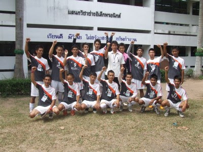

Thai-Austrian technical college
วิทยาลัยเทคนิคสัตหีบ
ที่ตั้ง
เลขที่ 193 หมู่ 3 ถนนสุขุมวิท ต.นาจอมเทียน อ.สัตหีบ จ.ชลบุรี มีเนื้อที่ 64 ไร่ 3 งาน 20 ตารางวา
การจัดตั้ง
วิทยาลัยเทคนิคสัตหีบ สังกัดกองวิทยาลัยเทคนิค กรมอาชีวศึกษา กระทรวงศึกษาธิการ
ได้จัดตั้งขึ้นตามข้อตกลงระหว่างรัฐบาลไทยกับรัฐบาลสาธารณรัฐออสเตรีย
โดยรัฐบาลสาธารณรัฐออสเตรีย เสนอให้ความช่วยเหลือด้านวิชาการ เครื่องจักร เครื่องมือ
และคณะผู้เชี่ยวชาญมาช่วยให้คำแนะนำเกี่ยวกับการติดตั้งการทำงานของเครื่องจักรกล
และการฝึกอบรมนักเรียน นักศึกษา ส่วนรัฐบาลไทยbเป็นผู้จัดหาที่ดินทำการก่อสร้างอาคารเรียนโรงฝึกงาน
และสิ่งก่อสร้าง อื่น ๆ ตามที่ทั้งสองฝ่ายเห็นชอบ
วัตถุประสงค์
1. เพื่อผลิตช่างเทคนิคให้สอดคล้องกับความต้องการของสถานประกอบการ
2. เพื่อให้นักเรียนนัก-ศึกษา เกิดทักษะตรงกับมาตราฐานช่างเทคนิค และสถานประกอบการ
3. เพื่อพัฒนาแผนการเรียนการสอนกับช่างอุตสาหกรรมให้สอดคล้องกับการพัฒนา ในภาคตะวันออก
ประวัติสถานศึกษา
วิทยาลัยเทคนิคสัตหีบก่อตั้งเมือวันที่ 1 กันยายน พศ. 2512 ภายใต้โดยความร่วมมือระหว่างรัฐบาลไทยและรัฐบาลสาธารณรัฐออสเตรียในสมัยนั้น ใช้ชื่อภาษาอังกฤษว่า
Thai-Austrian Technical School. ภาษาไทยคือ โรงเรียนเทคนิคสัตหีบ ณ บ้านอำเภอ ต.นาจอมเทียน อ.สัตหีบ จ.ชลบุรีมีเนื้อที่ทั้งสิ้น 64 ไร่ 3 งาน 20 ตารางวา
โดยประเทศไทยจัดหาสถานที่ ก่อสร้างอาคารเรียน อาคารฝึกงาน และรัฐบาลสาธารณรัฐออสเตรียให้การสนับสนุนด้านเครื่องมือเครื่องจักร ส่งผู้เชี่ยวชาญเข้ามาช่วยเหลือฝึกอบรม
การใช้เครื่องมือเครื่องจักรในการจัดเรียนการสอนให้กับครูและนักเรียน รวมถึงให้ทุนฝึกอบรมกับครูไทยในการเข้าฝึกอบรม ณ ประเทศออสเตรีย
วันที่ 11 ตุลาคม พ.ศ.2520 กรมอาชีวศึกษาได้จัดพิธีรับมอบอุปกรณ์ให้กับโรงเรียนเทคนิคสัตหีบ อย่างเป็นทางการโดย Mr.Kari Peterlik
เอกอัครราชทูตออสเตรียประจำประเทศไทยผู้แทนรัฐบาลสาธารณรัฐออสเตรีย เป็นผู้มอบนายภิญโญ สาธร รัฐมนตรีกระทรวงศึกษาธิการในขณะนั้น
เป็นผู้แทนรัฐบาลไทยเป็นผู้รับมอบ
วันที่ 2 สิงหาคม พศ. 2522 กระทรวงศึกษาธิการ ประกาศยกระดับสถานศึกษาจากโรงเรียนเทคนิคสัตหีบ เป็น วิทยาลัยเทคนิคสัตหีบ ใช้ชื่อภาษาอังกฤษว่า
Thai - Austrian Technical College (TATC)ในปีพุทธศักราช 2527 เนื่องในโอกาสที่กรุงเทพมหานครครบรอบ 200 ปี สาธารณรัฐออสเตรียได้
บริจาคเครื่องจักรและอุปกรณ์เพิ่มเติมให้แก่วิทยาลัยเทคนิคสัตหีบ รวมมูลค่า 2 ล้านบาท
วันที่ 12 กุมภาพันธ์ พ.ศ.2533 ได้มีการลงนามในบันทึกข้อตกลง ระหว่าง Mr.Hoch Lenitner ผู้แทนระดับสูงของรัฐบาลสาธารณรัฐออสเตรีย ร่วมกับนายบุญเทียม
เจริญยิ่ง อธิบดีกรมอาชีวศึกษาและผู้แทนรัฐบาลไทย เพื่อสานต่อวิทยาลัยฯ ในโครงการให้ความช่วยเหลือ ตั้งแต่ปี 2533 ถึง 2537 โดยมี ฯพลฯ Dr.Alois Mock
รัฐมนตรีว่าการกระทรวงต่างประเทศของออสเตรียร่วมเป็นสักขีพยานโครงการนี้ได้แบ่งการจัดส่งเครื่องจักรอุปกรณ์ออกเป็น 4 ระยะดังนี้
- ระยะที่ 1 เดือนสิงหาคม พ.ศ.2533 จัดส่งอะไหล่และอุปกรณ์บางอย่างมาเพื่อช่วยซ่อมเครื่องจักร
อุปกรณ์เดิมที่ซึ่งชำรุดและเพิ่มเติมอุปกรณ์และเครื่องจักร คิดเป็นเงิน 2,477,450.62 บาท
และวันที่ 19 พฤศจิกายน พ.ศ. 2533 มอบเงินจำนวน 991,872.52 บาท ให้วิทยาลัยฯ
ดำเนินการซื้อเครื่องจักรอุปกรณ์ภายในประเทศ
- ระยะที่ 2เดือนกุมภาพันธ์ พ.ศ.2533 ได้จัดส่งอะไหล่และอุปกรณ์เพิ่มเติมเป็นเงิน 8,335,934.74 บาท
- ระยะที่ 3 เดือนพฤษภาคม พ.ศ.2539 จัดส่งเครื่องจักรอุปกรณ์ ที่ทันสมัยเป็นเงิน 8,335,160.66 บาท และผู้เชี่ยวชาญจำนวน 4 คน ดำเนินการติดตั้งอุปกรณ์ และแนะนำการใช้
- ระยะที่ 4 เดือนกันยายน พ.ศ.2539 จัดส่งเครื่องจักรอุปกรณ์ที่ทันสมัยมาเพิ่มเติมในส่วนที่เหลือและจะมีผู้เชียวชาญมาปฏิบัติหน้าที่อีกประมาณ 5-6 คน
และจัดพิธีมอบเครื่องจักรเครื่องมือชุดใหม่ ตามโครงการให้ความช่วยเหลือครั้งที่ 2 ในวันที่ 2 พฤศจิกายน พ.ศ.2539 คณะผู้เชี่ยวชาญชาวออสเตรีย
ที่มาปฏิบัติงานในช่วงที่ 3 ของโครงการฯ ระหว่างวันที่ 2 พฤษภาคม - 10 กรกฎาคม พ.ศ. 2539 มีดังนี้
1. Mr.Hermann Kotzmann หัวหน้าผู้เชี่ยวชาญ
2. Mr.Kurt Reiter ผู้เชี่ยวชาญช่างหล่อโลหะ
3. Mr.Christian Gruber ผู้เชี่ยวชาญเชื่อม
4. Mr.Gerhard Mayer ผู้เชี่ยวชาญช่างไฟฟ้า – อิเล็กทรอนิกส์
อีกทั้งในปีการศึกษา 2539 วิทยาลัยเทคนิคสัตหีบ ได้รับเลือกให้เป็นสถานศึกษาดีเด่น ฯพณฯ ท่านรัฐมนตรีว่าการ
กระทรวงศึกษาธิการ นายสรอรรถ กลิ่นประทุม ได้มอบโล่รางวัลดีเด่น โดยมีนายวิชัย ป้อมประเสริฐ ผู้อำนวยการ
วิทยาลัยเทคนิคสัตหีบในครั้งนั้นเป็นผู้รับมอบ และวิทยาลัยเทคนิคสัตหีบ ยังได้รับรางวัลพระราชทานจากสมเด็จพระเทพ
รัตนราชสุดาฯ ในปีการศึกษา 2534 ในฐานะสถานศึกษาดีเด่นในระดับอุดมศึกษาของเขตการศึกษาที่ 12 ปี พ.ศ.2536
และเปิดทำการสอนหลักสูตรประกาศนียบัตรครูเทคนิคชั้นสูง (ปทส.)หลักสูตร 2 ปี มีฐานะเทียบเท่าระดับปริญญา
ตรีในสาขาวิชาเครื่องกล และเปิดสอนในสาขาวิชาเครื่องมือกลอีก 1 สาขา ในปีการศึกษา 2537

นอกจากนี้วิทยาลัยเทคนิคสัตหีบ ยังเป็นศูนย์การศึกษาของนักศึกษาสถาบันราชภัฏฉะเชิงเทรา (ในขณะนั้น) ในสาขา
วิชาวิทยาศาสตร์โปรแกรมวิชาเทคโนโลยีอุตสาหกรรม ซึ่งเปิดทำการเรียนการสอนตั้งแต่ ปีการศึกษา 2536 ถึงปีการ
ศึกษา 2540 มีทั้งสิ้น 5 สาขา คือ
1. เทคโนโลยีก่อสร้าง
2. เทคโนโลยีการผลิต
3. เทคโนโลยีเครื่องกล
4. เทคโนโลยีไฟฟ้า
5. เทคโนโลยีอิเล็กทรอนิกส์
ในปีการศึกษา 2555 วิทยาลัยเทคนิคสัตหีบได้พัฒนารูปแบบการเรียนการสอนแบบบูรณาการร่วมกับการทำงาน
(Work-Integrated Learning – WIL) ขึ้นด้วยความร่วมมือของ 3 ฝ่าย ประกอบด้วย สถานศึกษา สถานประกอบการ
สมาคมหรือองค์กรวิชาชีพ ภายใต้ชื่อว่า สัตหีบโมเดล โดย ดร.วัชรินทร์ ศิริพานิช ผู้อำนวยการวิทยาลัยเทคนิคสัตหีบใน
ขณะนั้น เพื่อส่งผลให้โครงการพัฒนาระเบียงเขตพิเศษภาคตะวันออก (East Economic Corridor - EEC) นำไปใช้เป็น
แนวทางการผลิตและพัฒนาบุคลากรให้มีสมรรถนะและทักษะตรงตามความต้องการของกลุ่มอุตสาหกรรมเป้าหมายในเขต
EEC โดยผู้ประกอบการที่เข้าร่วมโครงการสัตหีบโมเดลในปีการศึกษานั้น ได้แก่ บริษัทสยามมิชลิน จำกัด และบริษัท
ทีบีเคเค (ประเทศไทย) จำกัด
ในปี พ.ศ. 2558 นายศุภวิชญ์ เกิดสมบูรณ์ นักศึกษาสาขาวิชาเมคคาทรอนิกส์ วิทยาลัยเทคนิคสัตหีบ
ได้รับรางวัลพระราชทานในโครงการคัดเลือกนักเรียน - นักศึกษา และสถานศึกษา เพื่อรับรางวัลพระราชทาน
ระดับประกาศนียบัตรวิชาชีพชั้นสูง (ปวส.) ขนาดใหญ่ ประจำปีการศึกษา 2558 จากสมเด็จพระเทพรัตนราชสุดาฯ
สยามบรมราชกุมารี ณ ศาลาดุสิดาลัย พระตำหนักจิตรดารโหฐานพระราชวังดุสิต กรุงเทพมหานคร
ในปีงบประมาณ พ.ศ. 2559 สำนักงานคณะกรรมการการอาชีวศึกษา ได้ดำเนินการพิจารณาคัดเลือก
สาขาวิชาและสถานศึกษาอาชีวศึกษาในการพัฒนาให้เป็นสถานศึกษาที่มีความเป็นเลิศเฉพาะทางให้สอดคล้อง
กับนโยบายรัฐบาลในการส่งเสริมการลงทุนในอุตสาหกรรมเป้าหมาย เพื่อผลิตและพัฒนากำลังคน
ให้มีทักษะและความเชี่ยวชาญเฉพาะทาง ให้สอดคล้องกับความต้องการ ของภาคอุตสาหกรรมในกลุ่ม
New Growth Engine ของประเทศใน 10 อุตสาหกรรมเป้าหมาย First S-Curve และ New S-Curve
10 อุตสาหกรรมเป้าหมายที่เป็นความต้องการเร่งด่วนของประเทศ ทั้งในปัจจุบันและรองรับความต้องการในอนาคต
โดยสำนักงานคณะกรรมการการอาชีวศึกษา ได้คัดเลือกสาขาวิชาขนส่งระบบราง วิทยาลัยเทคนิคสัตหีบ
เป็นหนึ่งใน 7 สาขาวิชา และหนึ่งในสถานศึกษาเฉพาะทาง (นำร่อง) จาก 7 แห่ง
ในปีงบประมาณ 2560 สาขาวิชาเมคคาทรอนิกส์ วิทยาลัยเทคนิคสัตหีบ ได้รับการพิจารณาคัดเลือก
เข้าร่วมโครงการผลิตอาชีวะพันธุ์ใหม่ ปี 2561-2565 เพื่อสร้างกำลังคนที่มีสมรรถนะสูง สำหรับอุตสาหกรรม
NEW Growth Engine ตามนโยบาย Thailand 4.0 และการปฏิรูปการอุดมศึกษาไทย
ในปีงบประมาณ พ.ศ.2561 สาขาช่างอากาศยาน วิทยาลัยเทคนิคสัตหีบ ได้รับการพิจารณาคัดเลือก
จากสำนักงานคณะกรรมการการอาชีวศึกษา ให้เป็นหนึ่งในสาขาวิชาและสถานศึกษาอาชีวศึกษาในการพัฒนา
ให้เป็นสถานศึกษาที่มีความเป็นเลิศเฉพาะทาง ตามโครงการส่งเสริมสถานศึกษาอาชีวศึกษาให้มีความเป็นเลิศเฉพาะทาง
ในปีการศึกษา 2563 วิทยาลัยเทคนิคสัตหีบ ได้จัดการเรียนการสอนในหลักสูตรประกาศนียบัตรวิชาชีพชั้นสูง (ปวส.)
สาขาวิชาช่างอากาศยาน เพื่อผลิตและพัฒนากำลังคนด้านอุตสาหกรรมการบิน เพื่อรองรับการพัฒนาระเบียงเศรษฐกิจพิเศษ
ภาคตะวันออก EEC วิทยาลัยเทคนิคสัตหีบได้รับใบรับรองสถาบันฝึกอบรมและหลักสูตรด้านนายช่างภาคพื้นดิน จากสำนักงาน
การบินพลเรือนแห่งประเทศไทย(กพท.)
พ.ศ.2564 จากความร่วมมือของภาคีเครือข่ายอย่างเข้มแข็ง ส่งผลให้วิทยาลัยเทคนิคสัตหีบ ได้รับคัดเลือกให้เป็นศูนย์
ความเป็นเลิศทางการอาชีวศึกษา (Excellent Center) 3 สาขาวิชาได้แก่ สาขาวิชาเมคคาทรอนิกส์และหุ่นยนต์ สาขาวิชา
เทคนิคควบคุมและซ่อมบำรุงระบบขนส่งทางราง และสาขาวิชาช่างอากาศยานที่ได้รับการรับรองการเป็นสถาบันฝึกอบรมนาย
ช่างภาคพื้นดิน จากสำนักงานการบินพลเรือนแห่งประเทศไทย (The Civil Aviation Authority of Thailand : CAAT)
นอกจากนี้วิทยาลัยเทคนิคสัตหีบยังได้รับคัดเลือกเป็น ศูนย์บริหารเครือข่ายการผลิตและพัฒนากำลังคนอาชีวศึกษา
(Center of Vocational Manpower Networking Management : CVM) ในสาขาวิชาเมคคาทรอนิกส์และหุ่นยนต์เพื่อเป็น
ศูนย์กลางในการผลิตและพัฒนากำลังคนที่มีสมรรถนะสูงตรงตามความต้องการของพื้นที่เศรษฐกิจพิเศษภาคตะวันออกและ
ความต้องการกำลังคนของประเทศ
ในปีการศึกษา 2565 สาขาวิชาช่างเทคนิคโลหะ วิทยาลัยเทคนิคสัตหีบ ได้รับการประเมินให้เป็นศูนย์ทดสอบมาตรฐาน
ฝีมือแรงงาน ในสาขาอาชีพช่างเชื่อมอาร์กโลหะด้วยมือ ระดับ 1 , สาขาอาชีพช่างเชื่อมทิก ระดับ 1 , สาขาอาชีพช่างเชื่อมแม็ก ระดับ 1
ในวันที่ 14 พฤศจิกายน 2565 ดร.อรทัย โยธินรุ่งเรือง สุดสงวน ผู้อำนวยการวิทยาลัยเทคนิคสัตหีบ เข้าร่วมประชุม
คณะทำงาน (Join Working Group) ความร่วมมือด้านอาชีวศึกษาระหว่างกระทรวงศึกษาธิการแห่งราชอาณาจักรไทยกับ
กระทรวงแรงงานและเศรษฐกิจแห่งสาธารณรัฐออสเตรีย ณ ห้องประชุมราชวัลลภ ชั้น 2 กระทรวงศึกษาธิการกรุงเทพมหานคร
โดยมีคุณหญิงกัลยา โสภณพนิช รัฐมนตรีช่วยว่าการกระทรวงศึกษาธิการ เป็นผู้ลงนาม
และในวันที่ 26 พฤศจิกายน 2565 ดร.อรทัย โยธินรุ่งเรือง สุดสงวน ผู้อำนวยการวิทยาลัยเทคนิคสัตหีบ
เข้าร่วมประชุมหารือแนวทางความร่วมมือด้านอาชีวศึกษาโดยใช้การทำงานเป็นฐานระหว่างกระทรวงศึกษาธิการแห่งราช
อาณาจักรไทย กับกระทรวงแรงงานและเศรษฐกิจแห่งสาธารณรัฐออสเตรีย โดยมีเรืออากาศโทสมพร ปานดำ รองเลขาธิการ
สำนักงานคณะกรรมการการอาชีวศึกษาเป็นประธานในที่ประชุม ณ ห้องประชุม ชั้น 3 อาคารเวียนนาพาราไซด์ วิทยาลัย
เทคนิคสัตหีบ จังหวัดชลบุรี
ในวันที่ 14 กุมภาพันธ์ 2566 วิทยาลัยเทคนิคสัตหีบยังได้รับคัดเลือกเป็น ศูนย์บริหารเครือข่ายการผลิตและพัฒนากำลัง
คนอาชีวศึกษา (Center of Vocational Manpower Networking Management : CVM) ในสาขาวิชาเครื่องมือวัดและ
ควบคุม เพื่อเป็นศูนย์กลางในการผลิตและพัฒนากำลังคนที่มีสมรรถนะสูงตรงตามความต้องการของพื้นที่เศรษฐกิจพิเศษภาค
ตะวันออกและความต้องการกำลังคนของประเทศ